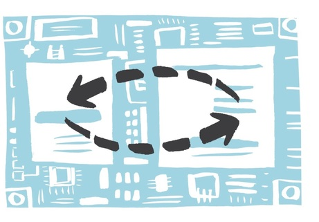

Introduction and Setting up¶
The BSP (Bulk Synchronous Parallel) computing model is a model for designing parallel algorithms. It provides a description of how parallel computation should be carried out. Programs written with this model consist of a number of supersteps, which in turn consist of local computations and non-blocking communication. A (barrier) synchronisation at the end of such a step is used to guarantee occurance of all communications within a step. The BSP model can be used to write portable and powerful parallel applications.
{kind=link}
Our library (EBSP) provides an implementation of the model on top of the Epiphany SDK (ESDK). This allows the BSP computing model to be used with the Epiphany architecture developed by Adapteva. In particular EBSP has been implemented and tested on the Parallella board. Our goal is to allow current BSP programs to be run on the Epiphany architecture with minimal modifications.
We believe the BSP model is a good starting point for anyone new to parallel algorithms, and our goal for this library is to provide an easy way to implement parallel programs on the Epiphany architecture, without having to resort directly to the Epiphany SDK. This documentation aims to provide both an introduction to the library and BSP programming in general. It should also be a very useful reference when programming using EBSP.
Making an EBSP Project¶
If you want to write EBSP programs you need to have access to a Parallella board with a recent version of the Epiphany SDK (ESDK) installed. If you want to read this documentation as a tutorial, it is perhaps easiest to clone the EBSP example project found on GitHub using git. The empty project template is organized as follows:
../project
├── bin
├── ext
│ └── bsp
│ │ ├── include
│ │ │ ├── e_bsp.h
│ │ │ └── host_bsp.h
│ │ └── lib
│ │ ├── e_bsp.a
│ │ └── host_bsp.a
│ └── ebsp_fast.ldf
├── Makefile
└─── src
├── ecore_code.c
└── host_code.c
If you just want to toy with the library, we suggest you use the example project, and write the code in src/ecore_code.c and src/host_code.c. To (re)build the program issue make from the command-line and afterwards run bin/host_program.
For more advanced use you can download the latest EBSP release from the release page on GitHub. The EBSP library depends on the ESDK, and uses a custom linker file. If you want to use EBSP directly, without using the empty project as a template, we provide you with an example Makefile below which you can adapt for your own project:
ESDK=${EPIPHANY_HOME}
ELDF=ext/bsp/ebsp_fast.ldf
CFLAGS=-std=c99 -O3 -ffast-math -Wall
INCLUDES = -Iext/bsp/include \
-I${ESDK}/tools/host/include
HOST_LIBS = -Lext/bsp/lib \
-L${ESDK}/tools/host/lib \
-L/usr/arm-linux-gnueabihf/lib
E_LIBS = -Lext/bsp/lib \
-L${ESDK}/tools/host/lib
HOST_LIB_NAMES = -lhost-bsp -le-hal -le-loader
E_LIB_NAMES = -le-bsp -le-lib
all: bin bin/host_program bin/ecore_program.srec
bin:
@mkdir -p bin
bin/host_program: src/host_code.c
@echo "CC $<"
@gcc $(CFLAGS) $(INCLUDES) -o $@ $< $(HOST_LIBS) $(HOST_LIB_NAMES)
bin/ecore_program.elf: src/ecore_code.c
@echo "CC $<"
@e-gcc $(CFLAGS) -T ${ELDF} $(INCLUDES) -o $@ $< $(E_LIBS) $(E_LIB_NAMES)
bin/%.srec: bin/%.elf
@e-objcopy --srec-forceS3 --output-target srec $< $@
clean:
rm -r bin